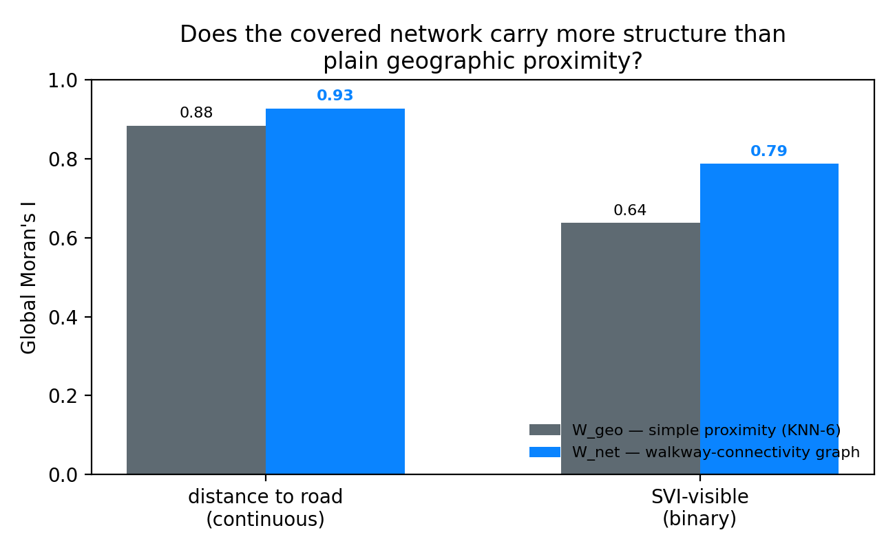
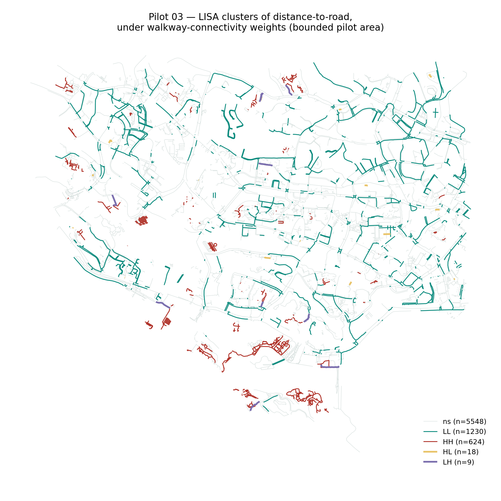

A first, narrower validation step ahead of a fuller graph-diffusion model: does SVI-invisibility itself cluster more strongly along the covered pedestrian network's own connectivity than along simple geographic proximity? Tested entirely on data already in hand — no new fetch, no fieldwork.
Pilots 01 and 02 established that SVI-invisibility is non-random and concentrates near lingering-supportive infrastructure. This notebook asks a more structural question: is the covered pedestrian network merely a backdrop the invisible segments happen to sit on, or is it itself a medium that the invisibility pattern travels along?
Method in one paragraph. Within a bounded pilot area, every covered segment becomes a spatial unit. Two spatial weights matrices are built over the same segments: W_geo, a conventional K-nearest-neighbour matrix based on straight-line distance between segment centroids; and W_net, a matrix built from the walkway network's own topology — two segments are "neighbours" only if they physically connect, independent of Euclidean distance. Global Moran's I and Local Moran (LISA) are computed for the same variable under both matrices.
The covered network has no single tag in OSM (Pilot 01's finding), so it doesn't arrive pre-linked — segments drawn under different tagging conventions can sit metres apart without sharing a node. Two segments are treated as network-neighbours if their endpoints fall within a snap tolerance of each other; any segment still isolated after snapping is bridged to its nearest neighbour within a wider cutoff, and segments still isolated after that are excluded and reported plainly.
# %% 2. Endpoint-snap graph + isolate bridging SNAP_M = 8.0 # endpoints within this distance = same junction BRIDGE_CUTOFF_M = 40.0 # remaining isolates get one edge within this radius # → 7,890 edges, 541 segments (6.8%) still disconnected in OSM — excluded below
W_net comes straight from the graph above. W_geo is a conventional K-nearest-neighbour matrix (k = 6) on the same segments' centroids — the standard "simple proximity" baseline any reviewer would expect ruled out before a network-topology claim is taken seriously. Both are restricted to the same connected subset so the comparison is apples-to-apples.
Two variables, in increasing order of "already trusted": dist_to_road_m (the continuous SVI-visibility proxy from Pilot 01) and svi_visible itself (the binary classification actually used in Pilots 01–02). If W_net produces a higher Moran's I than W_geo on both, the walkway network is carrying real structure that simple distance misses.
| Variable | W_geo (KNN-6) | W_net (walkway graph) | Gap |
|---|---|---|---|
| Distance to road (continuous) | 0.884 | 0.928 | +0.044 |
| SVI-visible (binary) | 0.638 | 0.787 | +0.150 |
Both significant at p<0.001 under 999 permutations. The gap is modest for the continuous variable — distance to road is itself already a locally smooth quantity, so much of its clustering shows up under either weighting — but substantial for the binary SVI-visibility classification actually used downstream: a 15-point jump in Moran's I.

SVI-invisibility clusters more tightly along the physical structure of the covered network than along simple geographic distance. The network is not a neutral backdrop — it's the medium.
Global Moran's I says the network carries more structure overall. LISA localises that: which segments sit inside a spatially-coherent invisible pocket (HH), which sit inside a visible pocket (LL), and — the more interesting cases — which segments are the opposite of their network neighbours (HL/LH). Those spatial outliers are exactly the sites a future fieldwork phase would prioritise.

Within the bounded pilot area (7,970 covered segments, 6.8% excluded as genuinely disconnected in OSM's tagging of the covered network — itself a small echo of Pilot 01's finding that this network has no stable identity in the data), the walkway-connectivity weights matrix produced a higher Global Moran's I than the plain-distance baseline for both variables tested, most substantially for the binary SVI-visibility classification actually used downstream in Pilots 01–02.
LISA localises this into 624 segments in a significant invisible cluster, 1,230 in a visible cluster, and 27 spatial outliers — segments whose visibility status runs against their immediate network neighbourhood. Those 27 are the natural shortlist for a fieldwork phase: places where the network's connective logic and the actual outcome diverge, which is exactly the residual-as-design-signal move from the threshold-affordance framing, applied one level down.
What this pilot does not show. It says nothing about behaviour — lingering, holding, care — because none of the inputs are behavioural. It is a test of whether a purely open-data-derived property propagates along network structure, not a test of whether social life does. That is a deliberate scope limit, not an oversight: it is the honest ceiling of what open data alone can carry, and the reason a later fieldwork phase remains necessary rather than optional.
dist_to_road_m is a proxy for a proxy. It is Pilot 01's floor estimate of SVI-invisibility, not a direct visibility measurement — every caveat from Pilot 01 propagates forward into this result.